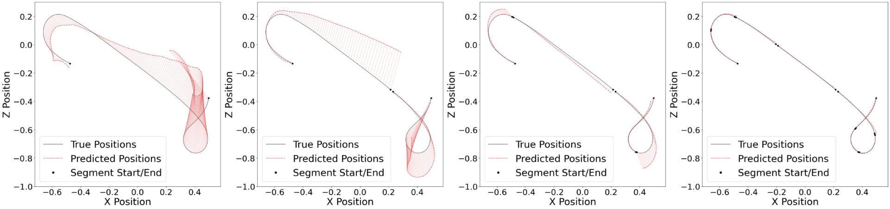

Portfolio | Simen van Herpt
Description
Extended the Predictive Encoder-Decoder (PED) architecture to better handle unmeasurable parameters in control systems by structuring the latent space into separate local and global components. The local component captures short-term dynamics for immediate predictions, while the global component encodes consistent parametric effects across entire trajectories. This separation reduces error propagation over long sequences and enables effective aggregation of global information via an attention mechanism. This architecture is shown below:
 A brief explanation is covered below. Further details will be added after the embargo period.
A brief explanation is covered below. Further details will be added after the embargo period.
Formal Description
Every recorded run of a control system, such as a flying drone, is first split into segments.
A segment
\(S_{ij}= \langle (\mathbf x_t,\mathbf u_t)\mid t=0\dots T-1\rangle\)
is a fixed-length window of consecutvive states \( x_t \in \mathcal{X} \) and control actions \( u_t \in \mathcal{U} \).
To train a predictive model, the segments are split into two parts:
\(S^{A}_{ij}=S_{ij}[:T_A]\) (the recent past) and
\(S^{B}_{ij}=S_{ij}[T_A:T_A+T_B]\) (the not-yet-seen future),
with \(T=T_A+T_B\).
The learning task is: given the past measurements
\(S^{A}_{ij}\) and the future control inputs
\(\mathbf u^{B}_{S_{ij}}\), predict the future measurable states
\(\mathbf x^{B}_{S_{ij}}\)
.
Because several slow parameters (battery health, actuator efficiency…) roughly remain constant throughout one run, we gather \(c_s\) segments from the same run into a cluster \(\mathcal C_c=[S_{ij_0},\dots,S_{ij_{c_s-1}}]\). Each past half \(S^{A}_{ij}\) is fed to an encoder \( \mathcal{E}_{\psi_e}\) that produces a spliced latent vector \(z_{S_{ij}}=[\,z^{\text{loc}}_{S_{ij}},\; z^{\text{glob}}_{S_{ij}}\,]\):
- \(z^{\text{loc}}_{S_{ij}}\) — captures fast, segment-specific effects (e.g. wind-gusts);
- \(z^{\text{glob}}_{S_{ij}}\) — aims to capture the run-level constants shared by every segment in the cluster.
Not every segment is equally informative. An attention network \(\mathbb A\) scores each past window and converts the scores into weights
\[ \alpha_{\mathbb A(\mathcal C_c)}= \Bigl[ \frac{e^{\mathbb A(S^{A}_{ij})}} {\sum_{S'^{A}_{ij}\in\mathcal C_c}e^{\mathbb A(S'^{A}_{ij})}} \;\Bigm|\; S^{A}_{ij}\in\mathcal C_c \Bigr]. \tag{1} \]
The global parts are then pooled: \(z^{\text{glob}}_{\mathbb A(\mathcal C_c)} =\sum_v\alpha_v z^{\text{glob}}_{S_{ij_v}}\). This single vector summarises the slow dynamics and is supplied to every decoder in the cluster, so all predictions agree on the shared context.
Before decoding starts we transform the last observed state
\(\mathbf x^{A}_{S_{ij}}[-1]\) into the initial hidden state
of the LSTM decoder. Handing over this exact present
allows the
latent vectors to concentrate on unknown influences rather than
wasting capacity on readily measurable quantities.
The complete decoding step is therefore
\[ \smash{\hat{\mathbf x}^{B}_{\mathcal C_c}=% \Bigl[\mathcal D_{\psi_d}\!\bigl( \mathbf u^{B}_{S_{ij}},\, z^{\text{glob}}_{\mathbb A(\mathcal C_c)},\, [\,z^{\text{loc}}_{S_{ij}},\mathbf x^{A}_{S_{ij}}[-1]\,] \!\bigr) \;\Bigm|\; S_{ij}\in\mathcal C_c\Bigr]}. \tag{2} \]
Equation (2) forces the decoder to be simultaneously consistent with three information sources: the common slow dynamics, the segment-specific fast dynamics, and the pre-known sequence of future control actions. Training the network end-to-end shapes a latent space in which local and global factors are disentangled.
By pooling information from many shorter segments within each cluster, the model uncovers subtle run-level constants without forcing any single decoder to predict far into the future. This design sidesteps the error accumulation that makes very long prediction horizons infeasible. The effect is illustrated in the figure below, where 200 time steps are subdivided into clusters of size 1, 2, 4, and 8 and the resulting prediction error is plotted. 
| Symbol | Description |
|---|---|
| \(P_i\) | a complete recorded run |
| \(S_{ij}\) | segment j of run i |
| \(S^{A}_{ij},\,S^{B}_{ij}\) | past / future split of a segment |
| \(\mathcal C_c\) | cluster of \(c_s\) segments that share run-level parameters |
| \(z^{\text{loc}}_{S_{ij}}\) | latent for fast, segment-specific effects |
| \(z^{\text{glob}}_{S_{ij}}\) | latent for slow, run-level effects |
| \(\alpha_{\mathbb A(\mathcal C_c)}\) | attention weights, see eq. (1) |
| \(z^{\text{glob}}_{\mathbb A(\mathcal C_c)}\) | attention-pooled global vector |
| \(\mathbf u^{B}_{S_{ij}}\) | future control inputs supplied to the decoder |
| \(\mathbf x^{A}_{S_{ij}}[-1]\) | last observed state, used to initialise the decoder |
| \(\hat{\mathbf x}^{B}_{\mathcal C_c}\) | decoder’s predicted future states, eq. (2) |